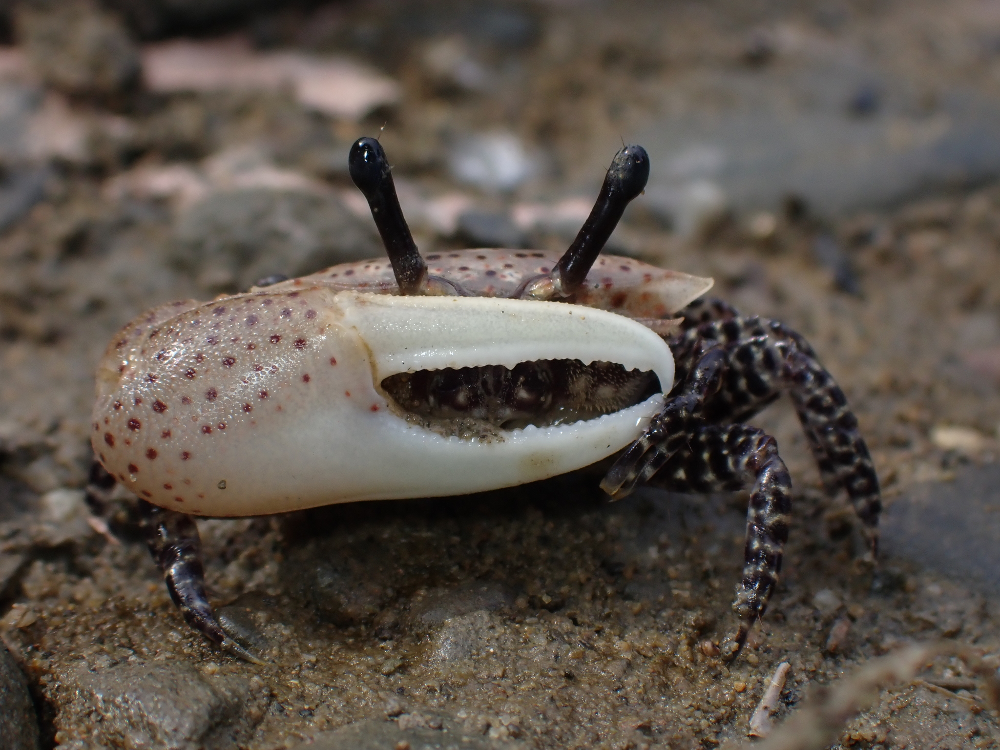

Austruca triangularis
Triangular Fiddler Crab

Type Description
Gelasimus triangularis Milne-Edwards, A. (1873) Recherches sur la faune carcinologique de la Nouvelle-Caledonie. Nouvelles Archives de Muséum d'Historie Naturelle de Paris 9(2):156–332.
Taxonomy
Subfamily Gelasiminae → Supertribe Gelasimitae → Tribe Gelasimini → Genus Austruca → Subgenus Cuneatuca Common Names
Synonyms, Alternate Spellings, & Name Forms (Chronology )
Austruca triangularis Gelasimus triangularis Gelasimus triangularis var. variabilis Gelasimus triangularis variabilis Gelasimus variabilis Uca triangularis Uca triangularis triangularis Uca triangularis var. variabilis Uca triangularis variabilis Uca triangularius Uca trianqularis Uca variabilis Size
Small Carapace Breadth: 11.0 mm ± 2.28 (sd), 95% range: 6.5–15.4 mm, (Data )
Geographic Range
Indo-West Pacific Realm: Indonesia, Philippines, Taiwan, southern Ryuku Islands, New Caledonia, eastern Australia, Melville Island (northern Australia), remote occurrences along mainland China
Red markers indicate locations where this species is found according to the scientific record; blue markers represent false or mistaken observations from the scientific record; green markers represent “research grade” observations imported from iNaturalist .
Range map data derived from: Crane (1975) ; Dai & Yang (1991) ; Fukui et al. (1989) ; George & Jones (1982) ; Huang et al. (1989) ; Iguchi & Nishihira (1994) ; Jones & Morton (1994) ; Poupin (2010) ; Shih et al. (2010) ; Shih et al. (2019) ; Tang et al. (2007) ; von Hagen & Jones (1989)
External Links
Encyclopedia of Life Wikipedia iNaturalist NCBI Taxonomy Browser/Genbank GBIF
No videos available at this time.
Adirwiryono et al. (1984) ,
Akash & Chowdhury (2017) ,
Alcock (1900) ,
Altevogt (1969) ,
Aprilyanto et al. (2017) ,
Barnard (1950) ,
Barnes (2010) ,
Beinlich & von Hagen (2006) ,
Chopra & Das (1937) ,
Crane (1975) ,
Davie (1982) ,
De Man (1887-1888) ,
De Man (1891) ,
De Man (1892) ,
Deb (1998) ,
Deb (1999) ,
Dev Roy & Bhadra (2005) ,
Dev Roy & Bhadra (2011) ,
Emmerson (1990) ,
Estampador (1937) ,
Estampador (1959) ,
Fransen et al. (1997) ,
George & Jones (1982) ,
Gordon (1934) ,
Guinot (1979) ,
Henderson (1893) ,
Ho et al. (1993) ,
IUCN Bangladesh (2015) ,
Jones & George (1982) ,
Juncker & Poupin (2009) ,
Kawaida et al. (2017) ,
Kingsley (1880) ,
Krishnan (1992) ,
Maccagno (1928) ,
Macintosh (1978) ,
Macnae (1968) ,
McNeill (1968) ,
Michie et al. (2015) ,
Milne-Edwards (1873) ,
Mitra et al. (2010) ,
Miyake (1938) ,
Miyake (1939) ,
Miyake (1963) ,
Murai & Goshima (1987) ,
Murniata (2010) ,
Murniata (2015) ,
Naderloo et al. (2016) ,
Naderloo et al. (2010) ,
Naiyanetr (2007) ,
Ng & Davie (2002) ,
Ng et al. (2008) ,
Ng & Richer de Forges (2007) ,
Ng et al. (2017) ,
Ng et al. (2001) ,
Nobili (1899) ,
Nobili (1899) ,
Nobili (1903) ,
Ono (1963) ,
Ortmann (1894) ,
Ortmann (1897) ,
Poupin (2010) ,
Pratiwi (2009) ,
Pratiwi & Widyastuti (2013) ,
Pratiwi et al. (2018) ,
Rao & Rath (2014) ,
Rath & Dev Roy (2008) ,
Rathbun (1913) ,
Rosenberg (2000) ,
Rosenberg (2001) ,
Rosenberg (2002) ,
Rosenberg (2019) ,
Rosenberg (2020) ,
Sakai (1936) ,
Sakai (1976) ,
Serène (1973) ,
Shih et al. (2013) ,
Shih et al. (2010) ,
Shih et al. (2016) ,
Shih et al. (2010) ,
Shih et al. (2019) ,
Stephenson et al. (1931) ,
Tan & Ng (1994) ,
Tang et al. (2007) ,
Tesch (1918) ,
Tweedie (1937) ,
Tweedie (1950) ,
von Hagen (1970) ,
Wada (2019) ,
Wada (2020) ,
Ward (1941) ,
Yoshigou (2001)
{kind=link}
{kind=link}